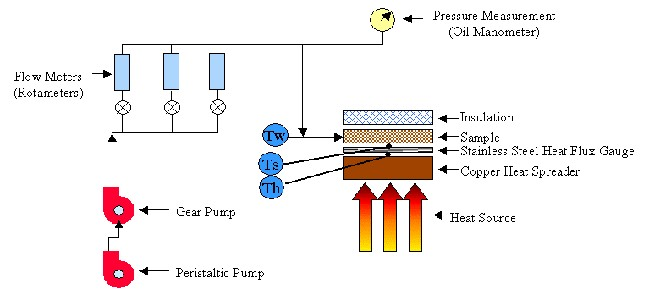
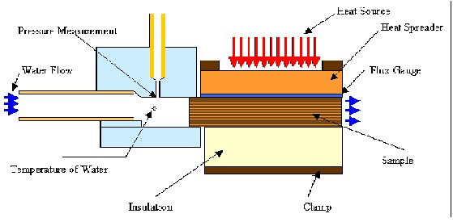
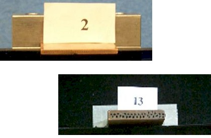
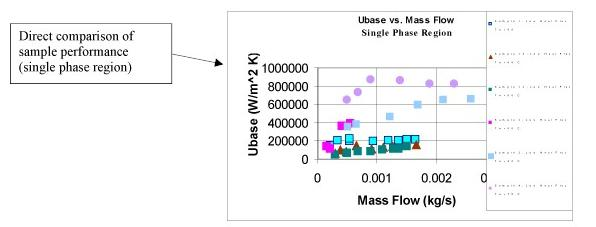

|
Recent development in powder metallurgy has enabled manufacturing
facilities to produce channels with very unique characteristics. Since
these manufacturing techniques are relatively new, research into the
heat exchanging performance of these channels is deficient. An analysis
of the heat exchanging performance of these channels would aid in
assessing applications for these channels.
Project Description
This project is concerned with an analysis of the performance
of liquid cooled heat sinks, made using nontraditional manufacturing
techniques, and a comparison to heat sinks made using existing
technology. The heat exchangers are provided by MER corp.. The MER heat
exchangers are manufactured using powder metallurgy. The metallurgy
process provides for a “rough” interior heat-exchanging surface, we
call these poly capillary samples. The task is to determine if the
powder metallurgy process provides for an increase in heat exchanging
efficiency. If so, what heat exchanging design performs the most
efficiently?
The exchangers are compared to one another
using different criteria. The heat exchanger characteristics are based
on base area and wetted surface area. The poly capillary sample
performance is compared to a heat exchanger with similar
characteristics made using existing technology. This test was developed
to determine if the new metallurgy process provided for an increase in
performance. In addition, the poly capillary sample performance was
assessed in relation to one another. For each sample heat flux, heat
coefficient, thermal resistivity, Nuesselt Number, and Reynolds Number
are used for comparison and an analysis of performance. Based on the
forementioned comparisons, the most efficient heat exchanging design
can be used to meet design specifications.
 Flow Loop  Manifold Cross-section Samples:
 Results: 
Publications
Loufty, R., Ortega, A., Wallinger, D., Prindiville, T. "Novel
Boiling-Enhanced Multi-channel Heat Sinks," The 6th ASME-JSME Thermal
Engineering Joint Conference. March 6-10, 2003.
 PDF (301 K) PDF (301 K)
|